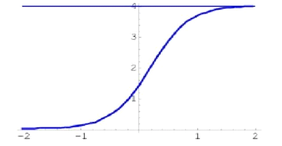
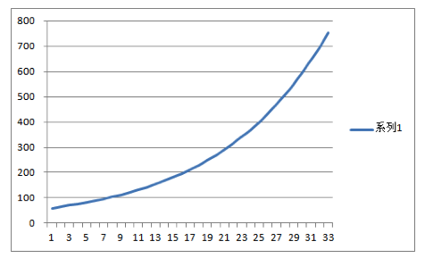
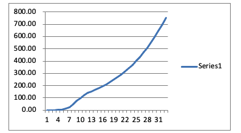
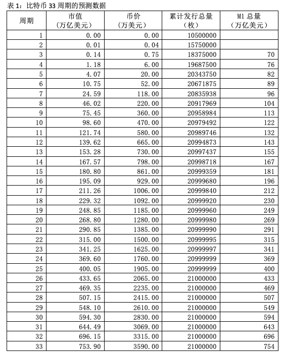
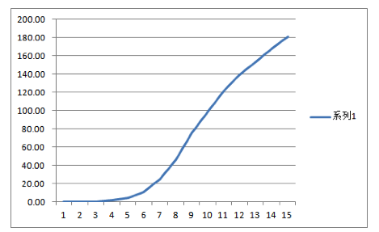
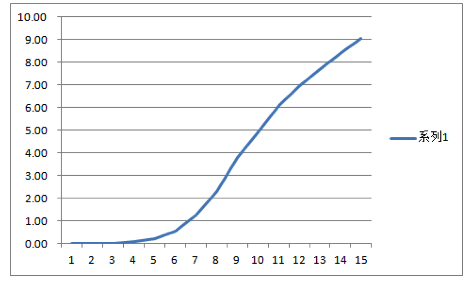
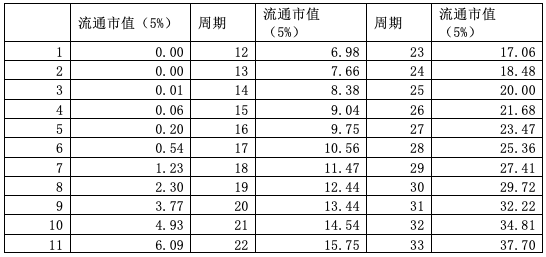

Bitcoin Studies: Finding Nakamoto Satoshi【13】——Bitcoin Natural Growth Curve
ZWS(Zhu Weisha), a Famous Chinese Entrepreneur
For ease of understanding, add some explanations of basic financial concepts. There is some repetition with the previous article, and readers who understand can skip Section" 13.2 defects of fiat currency" begin.
13.1 Basic Concepts
Finance is a science everyone uses and seems to understand, with low barriers to entry. Because of its everyday use, there are many researchers and schools, and each basic concept has a different school of interpretation, and each arrangement seems to make sense. Since the financial theory is based on society as a laboratory, short-term effectiveness may not be effective in the long term, resulting in a chicken-and-duck debate. We are asking the most fundamental finance questions and should give the definitions and explanations in this paper to ambiguous basic concepts.
1. What is Value?
Value is subjective and depends on personal opinion, just like a girl's face, some people think it's beautiful, and others believe it's not lovely. Therefore, value is the individual's standard of judgment.
2. What is consensus?
There is a relatively uniform perception of whether someone is beautiful or not in a region, and that's consensus, which is consistent value identification.
The measure of consensus size is local consensus, general consensus, and global consensus.
At present, Bitcoin is the general consensus, which has no quantitative definition and follows the literal meaning of the word "general."
The consensus on asset value is a specific consensus called asset consensus. The consensus referred to in this article is asset consensus. The measures of asset consensus are people and money. The consensus of people is the number of people, and the consensus of funds is the market value. Bitcoin's consensus belongs to asset consensus.
Consensus is time-sensitive, and it takes a long time to reach a consensus, which means that the life of the consensus is also long. For example, gold has reached consensus for no less than 500 years. Bitcoin reached consensus at 132 years.
Consensus is conditional, and when conditions change, the consensus will change. For example, Huanfeiyanshou is the difference in the aesthetic standards of different dynasties in China, that is, the difference in consensus. The preference of the emperor at the time was the one that prompted the consensus to change.
3. Labor can create value, but the value is not only created by labor but also requires other inputs.
Therefore, cost represents labor in a broad sense, including various inputs, and will use the term cost instead of labor.
4. Value is divided into use value and asset value.
Things with asset value are not necessarily high in use value, such as diamonds, gold, and Bitcoin; their use value is far lower than that of water, air, and sunlight. Conversely, asset value is not necessarily high for things with high use value. Therefore, the value in this article below refers to the asset's value unless otherwise specified.
5. What is the asset value?
Represents the condensation of costs. The value of intangible assets also represents the condensation of costs. In other words, there is no cost and no asset value. The orientation of the building is different, the sunlighting is different, and the price is different. The use value of sunlight has not changed. What affects the price is the scarcity of the location of the house. Changed the conditions of the use of the sun.
6. What is a trade?
Although trades are based on demand, differing perceptions of asset value generate transactions. The moment the two parties reach a deal, it is price generation or price recognition. They both thought they had made a profit. The reason is a different perception of the future value of the item.
7. What is the price?
Price is pricing for value. Therefore, prices have different pricing units.
8.What is the pricing unit?
Currency is a unit of pricing. Pricing unit is currency.
9. What is currency?
Currency is divided into asset currency and credit currency.
10. What asset currency?
The valuable endorsement behind it is called asset currency. The hardness of the asset behind the coin determines the value of the asset coin. Assets are divided into tangible, intangible, current, and future assets, etc., and the hardness is different. The asset with higher hardness than gold is Bitcoin.
11. What is a credit coin?
Credit currency is endorsed by credit. Although credit is intangible, it is also the value of assets called credit value. Trust value is not intrinsic value, but the intrinsic value is a value that has been consensus upon, such as gold. The credit value is the value that can realize in the future, such as taxes. The higher the realizability of future value, the higher the credit. Government power is also credit, and the hardness of government power credit is less than tax revenue. Tax achievability is high, close to tangible assets. Government credit corresponds to monetary inflation.If fiat currency only corresponds to government power, then the credit generated by power can be directly measured by the inflation rate.
12. What is fiat currency?
Fiat currency is a type of credit currency; the difference lies in the size of the credit. The U.S. dollar is the most trusted fiat currency and uses national taxation as a credit endorsement. When assets are only held and not sold, they cannot be realized by asset taxation. When a lot of dollars flow into the capital market and no transactions occur, the U.S. government cannot collect taxes. The industry is generally a stable tax source, and there will be regular taxation. Asset holding is not a steady taxation source but uncertain taxation, which makes it impossible to achieve a balance between issuing fiat currency and taxation. The solution is to raise the tax rate, but it also destroys the natural balance of the real economy; another is to borrow the new to pay off the old, and the debt is getting bigger and bigger. Today: "The central bank has no ability to deal with the problem of monetary and financial scale accumulated by the central bank itself." (2) This is the status quo in the United States. Fiat currency has largely contributed to the development of the contemporary economy, but the problem is vast.
The most critical factor for the high credit of fiat currency is global liquidity, and the price of fiat currency that can flow globally is the actual price.
13. What is Aircoin
Air currency is also a credit currency, which refers to the Aircoin that appears in the blockchain. The first type is a coin issued according to a business plan, similar to the seed round of venture capital. If this cannot realize the story, the coin has no asset endorsement, the credit goes bankrupt, and the coin's value returns to zero, just like air. The second type of air currency has a cost, no transaction, and is held in hand like waste paper. Air coins to asset coins are convertible. The first is to increase investment and make value. The second is very simple; the transaction has value. Bitcoin falls into the second case.
14. How is the price of an item determined? As said earlier, it depends on the transaction. So how did the price come about? its current price is determined by reference to the price of previous transactions. You can return to the initial State of no trade from these steps. Before there is a transaction, there must be a cost. Air and sunlight have no cost and, therefore, no transaction value, so they are free. It is the most fundamental principle of Mises's Law of regression. Gambling also has costs, and the price is not about pricing the item.
15. What is a measure of asset value?
Cost and demand determine the price. These two points combine to create scarcity. Rare is the most precious thing, a consensus formed by human beings for thousands of years. When many people think that the item is valuable, it means that there is a general consensus, and they are willing to keep it for future exchange because it is easy to sell. More general consensus means more demand, and scarcity occurs when need is far greater than supply. In the same way, the higher the cost, the more difficult it is to produce, as is the case with gold mining. When we measure the value of an asset, we estimate the scarcity contained in the asset's value.
16. How is the use value measured?
Measures the asset's value contained in the use value. So the use value we trade is the asset's value in the use value. It measures the scarcity of assets. Without scarcity, consensus cannot last for a long time. Both tangible and intangible assets measure scarcity. It's just that some intangible assets are difficult to measure the degree of scarcity accurately. For example, the power of the government is exclusive and scarce, so it also has asset value. But its value is vague. Fiat currency and government power are not equal.
17. What is scarcity?
A careful distinction has many features and aspects that make up an asset value measure, which are two main features to keep in mind: Rarity and Eternity. First, people don't suffer losses for saving things. That is, the item can preserve its value. The ability to hold value is called stored value, and items with stored value can easily become a medium of exchange.
18. What is a medium of exchange?
Used to measure the value of other assets and commodities. That is money. Gold became the medium of exchange before fiat tender because of its globally recognized store of value. There are many mediums of exchange; shells, boulders, gold, and silver have all been done.
The above concepts are summarized as follows;
1. Value condenses cost; no cost has no value.
2. The size of the value is a subjective judgment, and the value is confirmed through the transaction.
3. Consensus is the unanimous judgment of the group on the value. Consensus is a function of time.
4. Cost is a criterion for value judgment.
5. Demand is another criterion for value judgment.
6. The Rarity and Eternity of scarcity provide support for asset value.
7. Humans have chosen scarce gold as currency, but gold is not suitable for modern economic development.
8. Currency represents asset value and the most extensive human need. Therefore, it became a medium of trading into asset currency, credit currency, and air currency.
9. Fiat currency is a credit currency. Fiat currency has contributed to the development of the contemporary economy, but the problem is enormous.
10. Bitcoin has properties that surpass gold and is suitable as a reserve currency.
The above concepts are subjective views and belong to the scope of consensus.
In summary, fiat currency does not comply with the principle of scarcity, is the old ancestor wrong, or is fiat currency wrong? If there is no blockchain, no conclusion can be drawn. From the practice of blockchain, fiat money is wrong. The following section is devoted to fiat money.
13.2 Defects of Fiat Currency
Fiat currency is backed by credit. Credit is an intangible asset. The cost of various fiat currencies is different, and the trust is also different. The credit of fiat currency comes from two sources:
1. The more specific the value that can realize in the future, the higher the degree of trust.
2. Government power. The more specific the consequences, the higher the trust.
The value that can realize is generally a deterministic debt endorsement, which is theoretically bound by Fisher's formula. Power intervention is a management method for one's ecology. If power becomes extreme, the currency is the ticket. Blockchain is about removing trust and managing. A system without an actual controller is a sound system. Someone has the potential to do evil.
13.2.1 The nature of RMB coupons
To clarify this issue it is a long discussion. So here is a brief discussion from the perspective of blockchain ecology.
Early food stamps, cloth stamps, and oil stamps had no inherent value, and their value was the value of power. The early RMB is equivalent to ecological points. Points can only be earned through labor and have intrinsic value. The universality is better than the food stamp cloth stamp. Reform and opening up, anchoring foreign exchange to issuing currency have strengthened the credit of RMB. Note that the increase in credit lies in the valued endorsement behind it.
Whether a fiat currency is a medium of exchange depends on whether it can be freely traded and circulated worldwide. It does not meet this requirement or partially meets it; strictly speaking, it is not a currency but a coupon within the ecosystem. Out of the circle, no one admits it. The price at which the currency trades results from market manipulation by the bookmaker, not the market price.
The RMB has foreign exchange controls like ecological management, just like a stock manipulated by a banker; the price is high or low, and the banker has to decide. The central banker adjusts the exchange rate price to adjust the interests of all parties in the ecosystem and the competitiveness of the RMB in the international market. Exchange rate controls make the price of the RMB unreal.
Since the exchange rate is not market-oriented, observing China's GDP and import and export data can roughly judge whether the RMB exchange rate is reasonable. It again depends on the authenticity of the data.
The issuance mechanism of tied foreign exchange is transparent, which is an advantage, but not scientific.
The way the government issues bonds, equivalent to corporate loans, depends on the solvency. Unfortunately, this road is unavailable in the United States, nothing more than another Ponzi. In the next section, we discuss the American case. The world needs a new way out.
The growth of the value of the RMB comes from the endorsement of the value of assets, and sticking to US$3 trillion is the bottom line for maintaining the value of the RMB.
The high property prices in China's property market have swallowed up the over-issued currency. There is no property tax in China's property market, and there is no corresponding enough taxation. As a result, the property market does not rise, and there is no purchase. A large amount of other currency has turned into reinforced concrete, becoming a dead asset that is not easy to flow. There is no real estate transaction tax, no taxation in all aspects of real estate, and a significant financial hole exists. At this time, local bonds are also used to endorse the central bank's currency issuance. It is impossible to know whether this debt has a tax endorsement. If not, it is not far from issuing currency without an anchor. Making money by writing numbers is the root cause of inflation.
The control must be effective, but it guarantees it will not die. So don't think about it if it gets better.
Another way is to revitalize the assets in hand so that the RMB has a long-term asset endorsement.
The Chinese government has many assets; unlike the U.S., it is a big rich man. However, the quality of the assets is unclear, and the endorsement relationship with the RMB is ambiguous. Plenty of credit-providing assets can't work. If it is clear, a strong RMB may be born. China's fiat currency has nothing to do with its holdings of assets. The asset coins of the blockchain have different endorsement situations, which Chinese decision-makers can reference. The key is that they use their old knowledge to judge new problems and abandon the blockchain they do not understand at the critical moment of human development.
13.2.2 The scientific nature of HKD design
If Hong Kong is regarded as ecology, the Hong Kong dollar is similar to the stable currency of the blockchain ecology. In contemporary research on finance, if you don't study blockchain and don't understand blockchain, it's like studying only theoretical physics in the study of physics and not paying attention to experiments. Experimentation drives contemporary physics and, thus, the world's science. In order to develop modern finance, there must also be experiments and laboratory simulations. The chaos that may appear in finance today and in the future has been tested in the blockchain, and it is only necessary to summarize.
From the perspective of the blockchain, the central bank is only a node that issues currency. Blockchain algorithm stablecoin Luna (UST), which just collapsed, is the same. Speaking of which, the scientific nature of the entire currency issuance mechanism of the central bank is lower than that of the algorithmic stablecoin UST. Unfortunately, algorithmic stablecoins do not have power as a rescue mechanism. The so-called low scientific nature lies in the randomness of issuing coins, not an algorithm decision but a human decision. Hong Kong dollar is an excellent algorithmic stable currency, and the role of human beings is to execute the algorithm. Another function is to bail out when the algorithm fails, like in the fight against Soros. Another part is to analyze whether its economy can support the linked exchange rate. That is, whether the reserve currency can withstand the risk. Generally speaking, the support of the Hong Kong dollar is not a big problem because he is a wealthy man, and all the land in Hong Kong belongs to him. The housing price in Hong Kong is the market price. The current risk comes from the destruction of the status of the financial center, which causes the market to worry.
Hong Kong has done an excellent job using assets, resulting in a low-tax area. It creates conditions for the inflow of funds.
Hong Kong's linked exchange rate also has bookmakers, but the policy is transparent, so the Hong Kong dollar is the currency, and the RMB is the coupon, which also has credit, but the credit is lower.
13.2.3 A good apple in a pile of rotten apples
What makes the dollar strong is that the dollar is not designed on the principle of solid power endorsement. There is also no foreign exchange control. It is one of the world's settlement currencies and the leader of the settlement system. But the quality of dollar-backed assets is already highly uncertain, just the best among a bunch of rotten apples. So if you insist on having a value scale, you have to use the dollar. The dollar's problems can be seen in the market.
"According to the U.S. media Zero Hedge reported on June 20, a West Virginia congressman named Alex Mooney once again submitted a new bill to the House of Representatives, trying to reset the U.S. monetary system. Return to the gold standard. The solution he proposes is to control the Fed's money supply, reinject the value of gold into the dollar, and give the decision back to the U.S. market, go back to the gold standard. Mooney is tell the U.S. fiscal A proposal resubmitted by the Ministry to recommend a return to the gold standard states that the dollar has lost 97 percent of its value since 1913, and that the dollar loses an average of 50 percent of its purchasing power every generation."
"Wall Street forecaster Peter Schiff told the U.S. financial website Zerohedge on June 25 that now that all parties, including Fed officials and Wall Street elites, have reached a consensus that the U.S. economy will decline, this will become start of a dollar contraction that would put gold (or gold-pegged digital currencies) back at the center of the international central bank monetary system, Peter Schiff warns that the Fed prints a lot of money and that money is losing value , it ends up breaking down suddenly one day." (6)
We keep hearing talk of a dollar collapse these days. According to a recent projection by the non-profit group the Committee for a Responsible Federal Budget (CRFB), the interest rate hike announced in September will add $2.1 trillion to the government deficit over the next decade. (7) If left unaddressed, the U.S. debt will soon spiral to new highs that could eventually destroy the U.S. economy. In addition, the Fed is rapidly raising interest rates in a desperate attempt to control inflation, which will cause all sorts of problems. The most significant inflation problem is already at 8%, which is scary.
13.2.4 Defects of Fiat Currency
In the history of economic theory, Adam Smith, Georg Knapp, Keynes, etc., all believed that the value of money comes from the rights contained in its IOUs, not its actual value. From this came the fiat currency. Fiat currency does not need intrinsic value; it is just a tool for economic adjustment; therefore, there must be an adjustment implementation organization, and the State has become a natural choice. It is the origin of monetary state theory. According to Knapp, the currency is the number plate from which the theater picks up the clothes and has no value. There is no problem with the number plate representing clothing, but what should I do if the number plate does not correspond to the dress? Fiat currency cannot accurately correspond to physical objects.
As an economic adjustment tool, there is a theoretical Fisher formula. It is speculative because it can only use for retrospectives, and it is impossible to use it for predictive adjustment. Many adjustments can only be effective in the short term; in the long run, it hurts. For example, the purchasing power of the U.S. dollar in 100 years is only 3%. (6) Put the air coin in the blockchain environment, and you can see it clearly. Air coin can only be a momentary high and a long-term downturn.
Fiat currency is an act of borrowing to issue currency, and fiat currency is an adjustment tool. The most direct use is to collect inflation tax. Due to the devaluation of fiat currency, Satoshi Nakamoto used Bitcoin to fight inflation.
Fiat currency has two adjustment factors, volume, and interest. Algorithmic stablecoins have an adjustment factor that adjusts the supply of volume. At this time, the algorithm must have a benchmark, such as the U.S. dollar. When the stablecoin deviates to a certain extent, the amount is adjusted to make the deviation return to normal. Hong Kong also uses the method to maintain the stability of the Hong Kong dollar. What is the issuance of U.S. dollars based on? Do not know. The adjustment principle of interest is clear. According to the inflation rate, the purpose is to let consumers choose between depositing or spending. There is a cost to paying interest, and on the Bitcoin standard, the interest paid is the rise of Bitcoin, and the government has no burden at all. Still, the words, economic growth, like Bitcoin, is a natural growth, and life-saving medicine is needed, but it cannot be used as a vitamin. Using fiat to regulate the economy is wrong. Short-term good and long-term bad.
The problem with fiat currency is: there is no asset endorsement, the issuance is arbitrary, and most fiat of issuance methods do not exceed the blockchain algorithm stablecoin UST. As an economic adjustment tool, it considers more short-term effects.
The U.S. dollar is the anchor of the fiat currency, and long-term problems cannot be solved by themselves.
The experiments of the blockchain show that the algorithmic stablecoin fails and the USD-backed stablecoin succeeds, which shows the importance of the asset hardness behind it. The fiat currency is not as good as the algorithm-stable currency. Without powerful support, it is as worthless as the air currency.
Relying on only one node and there is no rule, the ugliness of human nature is displayed in the blockchain.
Reference (8) is a summary of the nationalization of fiat currency for readers to compare. With no laboratory simulations, any theory that favors domination will prevail. It is human nature.
In just 9-10 years, the blockchain has condensed humankind's currency development path for thousands of years, showing that the fiat currency is unreliable. Today's fiat currency repeats the mistakes of the Song Dynasty in China. At that time, the Song Dynasty was very developed, and the problems and solutions encountered in the Song Dynasty were similar to those of modern times. Hence, the fate of the failure of contemporary fiat currency was identical to that of Jiaozi in the Song Dynasty. When discussing the Song Dynasty, Chinese-American scholar Sun Longji said: "When discussing whether the Song Dynasty was the early spring of the world's 'modernization', we still have to use the Western 'modernization' standards, such as the development of the market economy and monetary economy, urbanization, civilization, New breakthroughs in science and technology, secularization and internationalization of ideas and culture, etc. Most of these factors were present in China in the Song Dynasty, more than 500 years earlier than the West." (1). The transition from the gold standard to the fiat currency is the inevitable result of contemporary economic development, and many masters of economics have contributed their whole lives to this. Therefore, it is not right to go back. There was no Bitcoin in those days, but there is a new path with Bitcoin. It is the Bitcoin standard discussed in the previous section.
13.3 Bitcoin has minor deficiencies and great responsibility
13.3.1 Bitcoin has great use value and is not an aircoin
The most significant query to Bitcoin is that it has no use value. In fact, according to Fisher's formula, the value of financial circulation is equal to the value of The entity industry. That is, Bitcoin as a medium of exchange is excellent use value. In the future, replacing USD with UDAI as the currency anchor will be the most significant use value. Besides, Bitcoin is also often referred to as an air coin.
What is Air Coin? Air coins are credit coins. The blockchain refers explicitly to endorsing future stories or celebrities, and coins are issued under this condition. Also known as ICO (initial coin offering) to issue coins. Although there is a transaction price at this time, there is no asset backing, only the credit of the celebrity and the story of the future. Very similar to a V.C. seed round but have the ICO coin deal. Seed-round investments cannot be traded immediately. When Bitcoin first came out, it was very similar to seed round investment, but there was no financing for Bitcoin, and the method of issuing coins was fair and scientific. The mined coins have cost even though there is no transaction, and they are also air coins when there is no transaction price.
In summary, there are two kinds of air coins in the blockchain. One is that there is a transaction price and no cost input; the other is that there are costs and no transactions. For the first case, it is necessary to invest continuously. The investment will be converted into assets and thus become asset coins, just like a seed round project keeps growing. From the perspective of venture capital, this situation is precarious, and if you invest correctly, you will make a fortune. The second case is relatively Normalcy, the cost composition is at the price of the bottom, and although there is no transaction, the value is still there. Once the air currency is traded, it immediately becomes an asset currency. The cost of computing power constitutes the price bottom of Bitcoin.
Blockchain also has an equity coin. Adopting the POS (Proof of Stake) consensus mechanism does not consume energy and loses the scarcity value generated by the conversion of external asset value. Its value is no longer converted by external value but depends on the value of the project itself. It is no different from the capital market projects of Apple and Google. The analysis method of its value is suitable for the analysis method of project equity in the traditional financial market. For example, the project value of Ethereum comes from transaction fee income, and most of the value of the revenue is captured by the mortgaged ETH. There is a benchmarking relationship between the value generated by the mortgage of ETH and the bank's fixed deposit, which restricts the rise of ETH, which has a price ceiling and has lost the opportunity to compete with Bitcoin to become a currency ruler. Ethereum has become a payment tool. Its value is not as clear as equity. Equity in the capital market has a life limit, and the time life determines its value only for a limited time. It is impossible to generalize whether there is a lifetime limit for the equity coins of the blockchain.
Bitcoin is already a currency today, with a market cap in October 2022, as M1 is between Mexico and India. From the air to the world's major currencies, Bitcoin has come a long way in 13 years. The next goal is the Bitcoin standard, and there are hope and difficulties.
13.3.2 Must improve Bitcoin's consensus flaws
The first difficulty is the lack of broad public consensus. If gold is used as the standard for global consensus, Bitcoin will not reach it. In addition to lacking a general public consensus, Bitcoin also lacks an official consensus.
First and foremost, the lack of public consensus is due to the insufficient ease of use of Bitcoin. Existing blockchain technologies are far from centralized opponents in terms of ease of use and fall short of the ease of use required for widespread adoption. Furthermore, Bitcoin is not as convenient to store as gold. About 80% of the gold has been preserved in the folk, mainly in the form of ornaments. Therefore, Bitcoin cannot be solved by the existing blockchain technology to save problems conveniently. However, inheriting the leading ideas of Bitcoin, it is not difficult to solve these two problems simultaneously, and reasonable technical solutions exist.
In terms of official consensus, the problem is more complicated, not a technical problem, and there is no exact solution like mathematics. The previous section is about how to turn the enemy into a friend and resolve the official resistance force to achieve a win-win situation. A win-win situation exists, but all win situation does not exist. If there is a gaining party, there will be a losing party; only time can resolve this. Is this why Satoshi Nakamoto designed the Bitcoin growth cycle to be 132 years long?
13.3.3 The value source of Bitcoin
The value of Bitcoin comes from the conversion of electricity, and the production of any product requires the investment of equipment, human and financial resources. The difference is that more input cannot produce more products; more coins cannot be made because Bitcoin is based on a four-year period, and the production is halved. All the input only increases the mining difficulty, i.e., the computing power. The halving and the increase in computing power constitute scarcity. The higher the computing power, the more scarce it becomes. The cost of computing power forms the price moat of Bitcoin. The total amount of gold is unlimited, and the annual mining volume is unlimited. The total amount limit of Bitcoin and the advantages of halving in the cycle are not available to gold.
Gold is a cross-sovereign global official reserve currency, and Bitcoin has this possibility too. Bitcoin also has financial properties. With all the advantages of gold and none of the disadvantages of gold, the Bitcoin standard is a matter of course because:
1. Bitcoin stability.
2. The experiment of blockchain ecology.
3. The problems of the fiat economy have accumulated, and the second bailout of the Chancellor of the Exchequer is useless, and it is on the verge of solving the problem with a world war.
4. Humanity does not need war but peaceful means to solve economic problems.
Scarcity represents scarce and eternity, which constitutes the condition for preserving value, generates the demand for stored value and is the condensation of social labor value. The more scarce, the more valuable; a consensus formed over thousands of years. This concept is not enough how many times is said.
13.4 Financial Properties of Bitcoin
The above conceptual preparation will help to understand the following approach.
What are the financial properties of Bitcoin? According to Satoshi Nakamoto's white paper's definition, it is cash.
Cash is a type of currency. What currency is Bitcoin equivalent to in modern financial activity? Modern finance's currency definition is M0, M1, M2, and M3. According to the definition in the May 2002 quarterly report of the Hong Kong Monetary Authority, M1 is "cash and demand deposits held by the public," which can also be regarded as cash. M1 is the basis for commercial banks to create money. So it is the base currency. M1 is easy to count in modern financial activity. The Bitcoin system has the power to issue currency, like the central bank's power. The Bitcoin system is regarded as the central bank, and Bitcoin is the currency issued by the Bitcoin "central bank." Bitcoin fits the financial industry's definition of M1 and is also cash.
It is the essential basis for the model in this paper to establish the corresponding relationship between Bitcoin and the current financial system:
1. The Bitcoin system is an automatic central bank with automatic clearing and settlement capabilities.
2. The market value of Bitcoin corresponds to the market value of the current financial currency, M1.
3. If Bitcoin is standard, the market value of Bitcoin corresponds to the market value of the global financial currency M1.
4. Bitcoin is a stored-value currency.
13.5 Find the parameters of Bitcoin's natural growth curve
First of all, we analyze the defects of the current prediction formula, find out the existing natural growth model of the market, simulate the shape of the model according to the conditions given by Satoshi Nakamoto, find out the possible parameters, and propose the assumptions needed to draw the curve.
1. Analyze the defects of the existing prediction formulas
How did Bitcoin grow? His growth is reflected in price growth. There are two analysis and forecasting ideas; one is the model made by the former Dutch institutional investor PlanB. The model is the inventory (S) flow (F) ratio model derived from the scarcity of gold, namely the S2F model, which says that the ratio of gold inventory to production determines the price of gold. The more gold stocks, the less production, and the more scarce when demand remains unchanged, driving prices higher. The ratio of the two is less than 2% under current gold production. That is, the annual growth rate of gold is less than 2%. In other words, the current gold inflation rate is less than 2%. Currently, the yearly production of Bitcoin is 320,000, divided by the 18.69 million mined, which is 1.7%, and the inflation rate is also less than 2%. Initially, PlanB's model predicted Bitcoin accurately, but by 2022 there seems to be something wrong. Another model is to extrapolate bitcoin price based on data from on-chain bitcoin transactions, with less influence.
The original model used by PlanB was used to describe gold. To trace why the model went wrong, do we need to compare the difference between bitcoin and gold? The comparison is below.
Gold is in maturity; Bitcoin is in growth. The so-called maturity period means that the consensus mechanism is complete and the popularization stage has been completed. No one is unaware or disagrees that gold can retain its value. There are 7 billion people worldwide, and at least half of them identify with gold, reaching more than 3.5 billion or even more. How many people agree with Bitcoin? We counted up to 50 million holders earlier. More people will agree. Therefore, when the number of Bitcoin holders cannot grow geometrically, PlanB's exponential prediction model is biased.
The official reserve of gold is about 20% of the total, and the official reserve of Bitcoin is almost zero. So if it grows to 20%, it will drive the public reserve.
PlanB does not consider Metcalfe's Law of growth, which says that the value of the network is proportional to the user's square. Bitcoin relies on the Internet and is, of course, constrained by this Law. Gold does not mainly depend on the Internet and is a mature product without considering the Law. Metcalfe's Law makes sense when used on the Internet because every customer has the same value. The capital market is money voting, unlike the Internet people voting. Therefore, gold's rise is entirely different under the same inflation. It is a flaw in PlanB's formula. That is, the inflation of gold issuance does not wholly determine the rise of gold. The inflation rate of fiat currency and the rise and fall of asset value in the capital market also determine the price of gold.
Unlike Bitcoin, which can be halved every four years regularly, this halving has become a deterministic law, resulting in a speculative effect every four years. Since the market value of Bitcoin is currently not high, it is easy to bring benefits to manipulators. The advantage is that the bubble is quickly removed, and the disadvantage is the outflow of funds from Bitcoin. The PlanB model cannot predict how crazy the speculative money will be. The PlanB model is an exponential growth forecast, corresponding to Bitcoin's exponential halving (1/2)X (x represents the period). But the higher the market capitalization, the more money it takes to push the move up, and the harder it is to push it up. Therefore, the price trend of Bitcoin should be that the price growth rate shows an arithmetic decay rather than an exponential trend. This mathematical natural decay trend is the basis for predicting Bitcoin's natural growth curve.
As mentioned earlier, Bitcoin is only a demand pull, while gold is a two-way pull between cost and demand. Because the price of gold will increase investment in gold due to rising demand, increasing the number of gold mined, which in turn restricts the price. A rise in the price of bitcoin will not cause an increase in the number of bitcoins mined but will only drive up the investment in computing power and become a moat for the price of bitcoin. This feature cannot be generalized by the S2F model. Even if the Bitcoin inflation rate remains the same, the change in computing power will be enormous.
Conclusion: The PlanB model alone is not enough to describe Bitcoin.
2. Bitcoin belongs to natural growth and should conform to the natural growth curve
Metcalfe's Law describes the growth of Internet business value. Different companies have different promotion efforts, and the growth rate of users is also different, and the curve looks different. It inspires us to think, what should the user growth of Bitcoin look like? Is it possible to use Metcalfe's Law to describe Bitcoin's growth in value? Three factors affect the Value of Bitcoin itself: computing power, number of people, and money. The measure of computing power is scarcity. The rich and the poor are assumed to be proportionally distributed among users. Bitcoin is a masterless system with no actual controller and no corporate promotion. It is called natural sales in sales jargon. The emergence of explosive inflection points results from natural accumulation; when the conditions are met, someone pierces this layer of window paper, just like the straw that broke the camel's back. We believe that Bitcoin's computing power and user growth are natural, just like population growth. Therefore, using the natural growth curve to describe Bitcoin is more in line with the growth law of Bitcoin. Figure 1 is a Pearl curve and formula representing the natural growth of a population.
See the formula below. b, a.K are all parameters. Y=f(x).

Figure 1: Pearl Curve
If Bitcoin grows naturally, it should conform to this. Law. Just the parameters are different. "The modern biologists R. Pearl and L. Reed applied this curve to studying the Law of population growth. So this special curve is called the Pearl growth curve, or the Pearl curve for short. The change of economic development is characterized by a slow growth in the initial stage, then gradually accelerated growth , and then gradually slowed down after reaching a certain level, and finally reaches a saturated state. ……. Pearl curve is used to describe it. Therefore, the prediction method of Peerl curve is a method of fitting a Peerl curve according to the historical data of the prediction object with the changing trend of Peerl curve, and establishing a Peel curve model for prediction." (3) This formula is only used here to illustrate the effect and grasp the curve's shape law. There are many natural growth curves, all of which are retrospective fitting methods that require a large amount of data. Bitcoin does not have this data condition.
Analysis of Figure 1 can see that the Law of the curve in the figure:
1). have a top,
2). There is an inflection point,
3). The growth at the top and bottom is relatively slow,
4). Basically, showing a symmetrical pattern.
5). The graph is divided into three stages: potential stage, high-speed growth period, and maturity stage.
Bitcoin has now reached the 4th cycle. The PlanB model mainly described the first three cycles. In the 4th cycle, the PlanB model description is not quite right. Because of the inflection point in the growth period, PlanB's formula cannot be described. Bitcoin has only gone for more than three cycles, the fitting data is insufficient, and it is impossible to find the a, b, and K values in Pearl's formula. But there is also a period of potential, a period of growth, and a period of maturity. There are also tops and inflection points. The Pearl curve is used to describe long-term things and is more suitable as a reference for thinking about the growth of Bitcoin. What should Bitcoin's tops, inflection points, and growth curve look like? Find inflection points and analyze possible shapes of natural growth curves under given conditions.
3. Find the inflection point of the growth curve
The first 33 cycles of 132 years is a given condition by Satoshi Nakamoto.
Bitcoin has a total of 33 growth cycles, totaling 132 years. According to the research data, at the end of the 10th cycle, a total of 20,979,492 coins were after will be mined 21,000 coins. Why put the tenth cycle separately? Satoshi Nakamoto's birthday was April 5, 1975. But this year is not Satoshi Nakamoto's actual birthday. After studying Satoshi Nakamoto, I found that he has a wide range of knowledge and has deep research on philosophy, artificial intelligence, finance, and currency. This date of birth of Satoshi Nakamoto is by no means written casually. It took 42 years for American gold to be removed from the seal, which was unsealed on December 31, 1974. 1975 was the first year of unblocking, and April 5, 1933, was the date of the ban. After research, the 42 years correspond to the end of Bitcoin's primary mining. After 40 years of Bitcoin mining, only 20508 coins have not been mined, which means that the mining cycle is almost over. Satoshi Nakamoto's intuition is already very close to the standard natural growth curve. It is the puzzle that Satoshi Nakamoto chose to set for 1975 when he filled in his birthday. As the natural growth curve is symmetrical, mining follows the natural growth S-curve, so mining does not end in the 10th cycle but should end in the 12th cycle. There are still 5127 bitcoins that have not been mined. There are 12 cycles in this stage, and these 12 cycles constitute the Bitcoin mining cycle, basically cracking the birthday password left by Satoshi Nakamoto. The mining cycle is divided into S-curves: three cycles of gaining momentum, six cycles of growth, and three cycles of maturity. That is to say, starting from the 4th cycle is the inflection point of entering the growth stage, and starting from the 10th cycle, it will enter the inflection point of the mature stage. By the way, the unblocking of gold means an inflection point. If Bitcoin never has an inflection point by the end of the 10th cycle, Satoshi Nakamoto may come out to facilitate an inflection point.
Earlier, we said that the key to the inflection point is in his hands. Before that, if someone guessed and invited him, and he approved the proposed plan, why would Satoshi Nakamoto not do it to support this change? When he developed Bitcoin, he first reserved the application, referring to the article I wrote, "Which is Satoshi Nakamoto's intention, the stored value or the application debate?". I think the predetermined turning point occurred 40 years after the birth of Bitcoin, which is also his backup, and this is also the last date set for himself. It was when he was in his 70s. Is the world so stupid? Natural growth determines that the explosive inflection point will appear as scheduled. At present, Satoshi Nakamoto is not out of the mountains; he is watching; he is waiting. He believed in natural growth theory.
We have found the inflection points. The 4th and 10th cycles are the inflection points of the mining cycle, corresponding to the inflection points of the potential period (1-3), the high-speed growth period (4-9), and the mature period (10-12). So what cycle comes after 12 cycles? It is the Bitcoin standard cycle. Bitcoin's 33 cycles can be divided into two phases. Mining cycle and Bitcoin standard cycle. The Bitcoin standard period and the mining period are connected. The description of the previous section is explained here: "it will take a long time to achieve the Bitcoin standard, with the first point in time being 36 years from now, after 12 cycles of Bitcoin. This is when,the initial formation and establishment of a modern financial system on the Bitcoin standard should take place. The second point in time is 76 years later, when people have adapted to a Bitcoin-based financial system and established new credit and ethical standards and consumption habits based on the store value." The 36 years in the text are counted from 2022, corresponding to the first 12 cycles, and 76 years correspond to the first 22 cycles. Why is this written? Refer to Table 1 and Figure 3 below; you will know them after thoroughly studying them.
We still need to find where the top of the curve is. The top is associated with the end of the 132-year cycle. It involves the Bitcoin standard phase.
4. Find the top of the natural growth curve
We know that the growth cycle of Bitcoin is divided into two stages:
Mining cycle: 1-12 cycles, which is a 3:6:3 S-curve. Potential stage (1-3), high growth stage (4-9), and mature stage (10-12).
Bitcoin standard cycle: 13-33 cycles.
The end of the 33 periods is the beginning of the value ruler. Of course, any description is not absolute; the purpose of abstracting it into a model is to simplify the analysis. For example, there must be competition if other standards do not exist under the Bitcoin standard. There have been double standards in history, such as gold and silver. Any long-lived asset with hardness may become the standard currency. But the Bitcoin standard indicates that the fiat currency without hardness support will definitely not be competitive after the Bitcoin standard. See the description in the previous section for the Bitcoin standard and value ruler.
5. Known conditions
132 years is our known condition.
6. Assumed condition
Assumptions are required. Build the model. The model holds only under certain assumptions.
1) Assume that the financial properties of Bitcoin are equal to M1. That is the basic assumption of the Bitcoin standard. We have mentioned it many times before.
2) Suppose the economy can sustain 2% growth until 2140 in the next century. The United Nations wrote a report on June 17, 2019: The world's population growth has slowed, but it will still increase to 11 billion by the end of the century. As the population continues to nearly double, the economy will continue to grow.
3) Assume that the corresponding relationship between M1 and GDP remains unchanged. According to the 2021 data from the International Monetary Fund, the global GDP in 2021 is 84 trillion U.S. dollars, and the U.S. 23 trillion. The M1 in the U.S. is $20.5 trillion (4). Countries have similar situations. (5) Observe that global GDP and M1 data are very close.
4) Assuming that the global economic growth rate is 2%/year, the corresponding growth rate of M1 is also increased by 2%. The initial value of M1 is 70 trillion to represent the data in 2022. If Bitcoin were standard, the entire M1 would be represented by the Bitcoin market capitalization. By cycle 13, bitcoin's market value is close to the M1.
7. The calculation formula for M1 is obtained
There are two core views above: GDP and M1 are very close; Bitcoin equals M1.
There are 120 years left until 2140.
Under the above assumptions, the M1 in 2140 should be:
M1=70×1.02120=754 (trillion)
In the formula, 70 trillion represents M1 in 2022, and the 120th power of 1.02 means that M1 will grow at 2% every year for 120 years. It is Bitcoin's 132-year, 33-period price top.
The above is the analysis of 3 critical parameters of the curve structure， including the value of the top, the inflection point, and the approximate shape of the growth curve.
13.6 Inferring the Natural Growth Curve of Bitcoin
Add new assumptions to the above assumptions.
1) Assume that after 12 cycles, the market establishes the Bitcoin standard. It is an uncertainty assumption, a trend assumption, which implies that the market initially sets the Bitcoin standard, closing the market value of M1 and Bitcoin.
2) Assume that the mining cycle of Bitcoin conforms to the S-curve. The premise of this assumption is that there is currently no convincing model for predicting the Value of Bitcoin.
If M1 growth from 2022 to 2140 is 2%, the curve is shown in Figure 2. The X-axis represents the time, and the Y-axis represents the amount and total amount (trillions) of each stage of M1 change over the period. See Table 1 for the data. The problem with this graph is that it is uncertain whether the economy can maintain a growth rate of 2% in the future. It is also unsure whether there is a relationship between M1 and GDP in the fiat currency era after the Bitcoin standard. Unfortunately, we cannot predict the relationship between M1 and GDP after the Bitcoin standard. So to run out some data to fit it.
Because the economic models are entirely different, creating new models is the work of financial and economic experts beyond my capabilities.

Figure 2: 33 cycle M1 growth curves from 2022 to 2140
Using the above assumptions, according to the inference that price growth decays in arithmetic progression, we will simulate the data: cycle, Bitcoin market value, currency price, circulation, and M1 in Table 1. As a result, the market value of Bitcoin per cycle is shown in Figure 3.
The X-axis of Figure 3 represents the 33 cycles of Bitcoin, and the Y-axis represents the market value (trillions) of Bitcoin corresponding to the cycles.

Figure 3: Changes in Bitcoin's total market value
Comparing the total market value of Bitcoin in M1 in Figure 2 and Figure 3, after 12 cycles, the two graphs are basically the same from the 13th cycle. The data in Table 1 clearly show this. That is, Bitcoin was chasing the data of M1 before 12 cycles.
Table 1 has the corresponding data for each cycle of M1. For example, in the 10th cycle, M1 is 122 trillion, and the market value of Bitcoin should equal 122 trillion. Considering that it will not withdraw the fiat currency dollar entirely, the market value of Bitcoin is predicted to be 98 trillion. To the end of the 12-cycle mining cycle. By the 13th cycle, the Bitcoin standard cycle began, and the market value of Bitcoin corresponds to M1 until the end of the entire process of 132 years. Figure 2, Figure 3, and Table 1 data clearly show the relationship between M1 and Bitcoin market value.
The coin price in Table 1 is the average price of a cycle, not the closing price at the end of the cycle. It can see that the price growth multiples of the first three cycles are very high, but the total market value is very low. Taking the third cycle as an example, the market value of Bitcoin in the third cycle is very low, at 0.14 trillion. The average coin price is 7,500. The absolute market value of the 9th cycle has grown a lot, which is 538.9 times the market value of the 3rd cycle, reaching 75.45 trillion, and the average coin price has increased by 480 times, and the coin price is 3.6 million U.S. dollars. The fact that the coin price and the market value are out of sync is due to the increase in the number of coins in each period. At the beginning of the 13th cycle, the data of the two are almost synchronized. After that, the market value and M1 grew in tandem. The average price of Table 1 in the 4th cycle is 60,000 US dollars. The 4th cycle will end in 2023. There is still about a year left, and the coin price will be 20,000 in September 2022. This article is a new Bitcoin narrative: the solution must emerge when Bitcoin is supposed to change. If the average price is $60,000, the price at the end of 2023 will exceed 120,000. That's the power of narrative. Looking at the data in Table 1, reached Hal's conjecture in the seventeenth cycle, and the predicted coin price was $10.06 million. It is a natural consequence if the Bitcoin standard holds and the article's assumption holds.

Table 1: Bitcoin 33-cycle forecast data
Figure 4 plots the first 15 cycles separately, and it can see that the Bitcoin market value slope begins to change after 12 cycles. If the curve were prettier, the percentage of M1 would not be 2% and would have to be gradually decreased. This curve tells us that the slope of Bitcoin has changed after 12 cycles and that there is a high arbitrage opportunity for our design of the Bitcoin growth scenario for the first 12 cycles. The previous section described this very low-risk high-arbitrage scenario. It is a gift from God to our generation; the gift is also "stolen" by Satoshi Nakamoto for everyone.

The previous section mentioned the 5% bitcoin problem. Figure 5 is the 5% market value forecast for the first 15 cycles, and Table 2 is the specific data of the 5% market value forecast for the 33 cycles.

Figure 5: Market value forecast of 5% in 15 cycles: Y-axis (trillion), X-axis (cycle)

Table 2: Market value table of 5% Bitcoin. Unit: trillion dollars
13.7 The methodology used in this study is similar to that of stock market analysts
I researched bitcoin valuations in 2000 and found that all mathematical methods of studying bitcoin were unreliable. Mathematical formulas are useless when looking at multivariate systems, especially when the human factor is involved. There is almost no mathematical solution to the Byzantine Generals problem. Mathematicians prove that Satoshi Nakamoto's answer to the Byzantine Generals' problem is mathematically incomplete. Satoshi Nakamoto said that the interests in being evil are less than the interest in being honest, and people choose not to be evil. To solve technical problems by economic means, I summarize the above ideas of Satoshi Nakamoto as part of the Cryptonomicon. In this series, the section "Satoshi Nakamoto win the significance of the Nobel Prize" introduces Cryptonomicon.
Predicting the price of Bitcoin is not just a mathematical problem. Bitcoin is not a purely natural system. A purely natural system can find all the factors that affect the system. It is challenging to predict a system that is not strictly natural. Probability theory is a statistical prediction, and it is very rough. Actually, randomness is Unpredictable. For a system with human factors added, it is necessary to find the human factors that affect the Bitcoin system, see the characteristics and known conditions of Bitcoin, and limit Bitcoin to a specific proposition. My prediction is based on this proposition of Bitcoin standard, if Bitcoin standard, how will the market go? Finds out what affects Bitcoin Standard and address them. To fully consider the known conditions given by Satoshi Nakamoto, first of all, Satoshi Nakamoto advocates nature. His disappearance is modeled after gold, but Satoshi Nakamoto is too simple; after all, Bitcoin is not pure nature. The second Satoshi Nakamoto designed a long-term 132-year growth cycle, which means a thousand-year lifespan. The third left a 40-year password in the Genesis block. Fourth, Bitcoin's rise is all about narrative; the logic of the rise is consensus. If the logic is accepted, Bitcoin follows the curve of the draw. It is the power of consensus. The fifth most crucial feature of Bitcoin is that it has no ceiling.
A summary of the five known conditions given by Satoshi Nakamoto: natural development, long cycles, 40-year mining cycles, and a narrative of transforming gold and rising without a ceiling.
For a system with people, it is not impossible to predict; this is the work of capital market analysts. Great analysts are the first to see the deep logic of the project's development, which is confirmed by the market. Their thinking is first to know whether it is logical and whether the selected factors are reasonable. Models are built according to factors, and the absence of factors is the root cause of model failure. Analysts don't need to design scenarios; they only analyze scenarios. One of the characteristics of the Cryptonomicon is the use of technical means to solve business problems, including implementation plans, which analysts cannot solve. They are not responsible for solving design problems.
From the perspective of revealing the password of Satoshi Nakamoto's coin issuance cycle, we select parameters and design positioning, and simulate 33 cycles of price increases. Bitcoin does not have a ceiling, and its existence depends entirely on the logic of the narrative. Bitcoin's rise has changed the narrative, and new narrative changes have all caused the rise. The prevailing narrative right now is store value, digital gold. This narrative has a good side, surpassing all previous narratives, and has led to the entry of funds that are averse to inflation and diversify investment risks, rising to the current height. However, the flaw of the current narrative is that it does not give a path on how Bitcoin can replace gold, and it cannot shake the status of gold, also a dream to surpass the market value of gold. I'm honored to be able to give a plan in the section that presents the concrete realization of Hal's conjecture. It is the cypherpunk and Hal's dream. Although Satoshi Nakamoto did not comment on Hal's point of view, he agreed in his heart. He doesn't sell bitcoin as evidence. The situation will not change without overturning the positioning and implementation of our Bitcoin standard. This narrative is absolutely imaginative and logical. The specific parameters are inevitably not in place, but we still need to predict. At least one more crutch. Give you one more idea. Our base forecast data is fitted by brain-tapping based on the Law of descending arithmetic progression, considering possible reasonable parameters for 12 cycles. At the beginning of the 13th cycle, the Bitcoin standard no longer needs to be predicted because the factors affecting the curve become very simple. If everyone thinks it's right, it's right. It is the power of consensus.
In this section, based on the idea of the natural growth curve, a method for predicting the growth of Bitcoin is proposed for the first time. As the first solution to the Hal conjecture, it is necessary to run data fitting the Bitcoin standard condition to modify the curve. Idea right? A consensus on the argument is very welcome.
By the way, beginners who have read this section and then read the twelfth section of the previous area may understand it more clearly.
Mr. Lu Tiegeng provides all data calculations in this article.
Reference
1. 為什麼西方人說宋朝很"現代化"？這12種超前規範，領先西方500年
奇聞觀止 2020-11-27 19:50:07
2. 《貨幣王者》P.11
徐瑾著
上海人民出版社，2022年8月
3. 生長曲線函數
baike.baidu.com/item/生長曲線函數/1745363
4. US-Money supply M1
Traring Economic
5. CEIC Data
6. 中俄日印等42國去美元化後，美國終於提出退回金本位，幕後推手出現
BWC中文網 2022/06/26 16:54
7. 加息一時爽、還債兩行淚美國聯邦赤字又將添2.1萬億美元大窟窿？
https://cn.investing.com/news/stock-market-news/article-2136629
在6月時稱，預計每年的償債成本將因此增加三倍，從2022財年的近4000億美元增加到2032年驚人的1.2萬億美元——未來十年的成本攀升總額累計將達到8.1萬億美元。
8. 從貨幣起源到現代貨幣理論： 經濟學研究範式的轉變
劉磊
Ｃhina Ｒeview of Ｐolitical Ｅconomy Ｓept 2019
“根據Ｔｃｈｅｒｎｅｖａ的總結，以克納普和凱恩斯為代表的國定貨幣學說的觀點可以概括為以下七點：第一，將貨幣起源看作充當交易媒介、降低交易成本的觀點並沒有在貨幣史中找到證據；第二，只有從文明和製度發展的角度才能對貨幣有更全面的認識，這需要強調貨幣的社會因素和政治因素；第三，國家貨幣真實起源於公共部門；第四，貨幣的本質是社會關係，確切地說是一種債權債務關係；第五，全社會的債權債務關係是一個金字塔式的層級結構，其中國家貨幣位於這個金字塔的最頂層；第六，貨幣最初以及最重要的職能是價值尺度，其次是支付手段和債務清償手段，而交易媒介職能是之後衍生出來的；第七，記賬貨幣是貨幣理論中的原始概念，其產生時間早於貨幣物。”